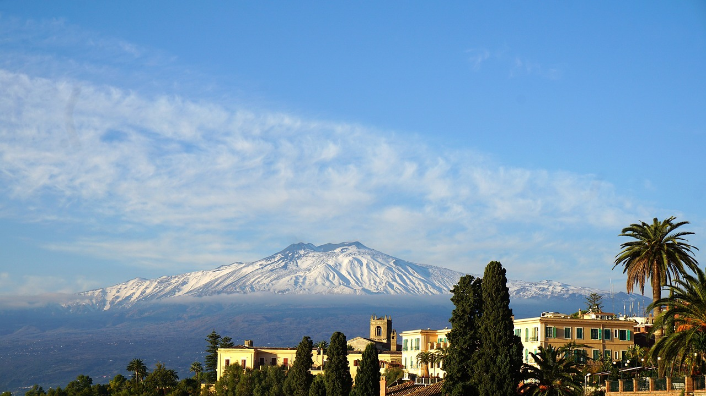
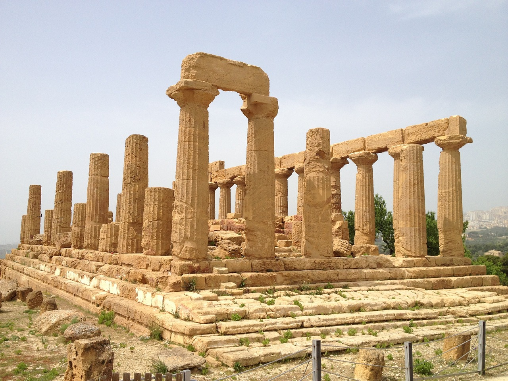
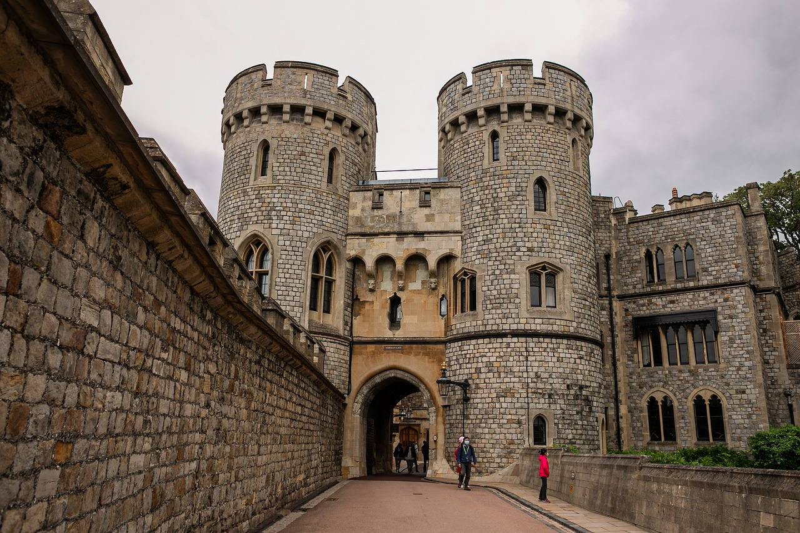
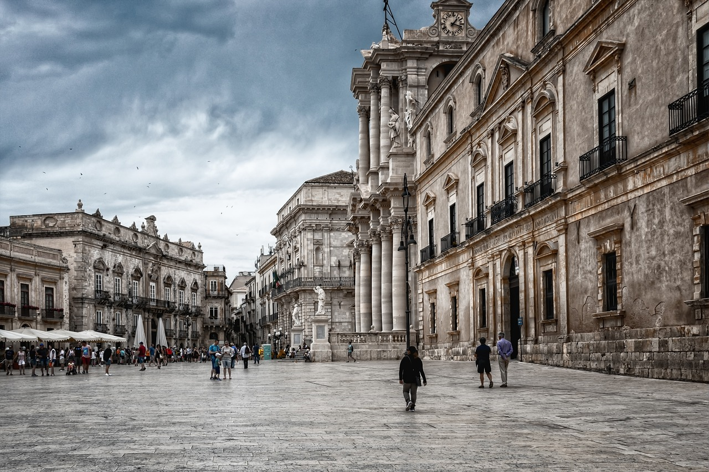
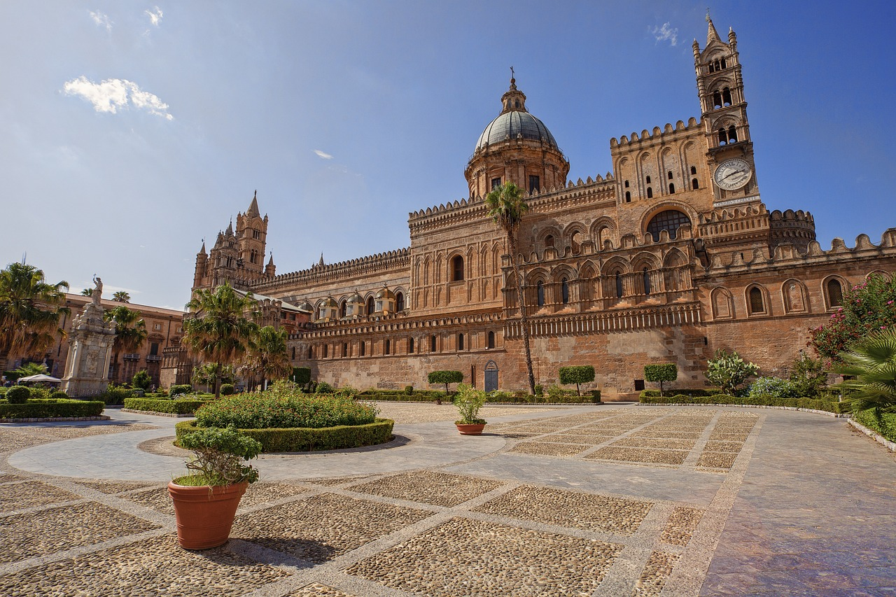
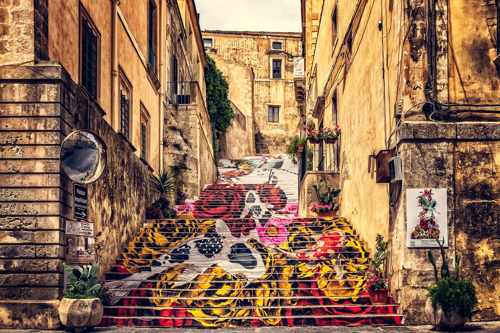

Etna: Euroopan korkein aktiivinen tulivuori tarjoaa mahdollisuuden retkeillä ja ihailla upeita maisemia. Opastetut retket vievät sinut tulivuoren huipulle, ja voit kokea sen voiman omin silmin.

Valle dei Templi, Agrigento: Tämä antiikin kreikkalaisten temppelialue on yksi Sisilian vaikuttavimmista historiallisista kohteista. Se sisältää useita hyvin säilyneitä dorialaistyylisiä temppeleitä, jotka ovat osa UNESCO:n maailmanperintökohdetta.

Palazzo dei Normanni, Palermo: Tämä palatsi on Palermon historiallinen aarre. Se toimi normannien kuninkaallisten hallintokeskuksena ja sisältää upeita arkkitehtonisia yksityiskohtia ja taideteoksia.

Syrakusan vanhakaupunki ja arkeologiset alueet: Syrakusa on tunnettu antiikin Kreikan perinnöstään, ja sen vanhakaupunki Ortigia on täynnä historiallisia nähtävyyksiä. Lisäksi voit vierailla Syrakusan arkeologisilla alueilla, kuten amfiteatterilla ja arkeologisella puutarhalla.

Monreale'n katedraali: Tämä upea katedraali sijaitsee Palermon ulkopuolella ja on tunnettu sen kultauksin koristelluista mosaiikeista ja barokkityylistä.

Noto: Tämä kaupunki on barokkityylin mestariteos, ja sen historiallinen keskusta on täynnä upeita rakennuksia ja nähtävyyksiä, jotka ovat osa UNESCO:n maailmanperintökohdetta.
Klikkaamalla mieluista kuvaa saat tietää nähtävyydestä :D